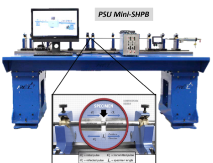

Miniature Kolsky Bar Apparatus (∅ 3.17 mm)
Experimental Apparatus

HARDWARE ARCHITECTURE
Bar Material:C350 Maraging Steel
Bar Diameter:∅ 3.17 mm (1/8″ OD)
Bar Lengths:Inc. 1.0 m, Trans. 1.0 m
Wave Speed:C0 ≈ 4,960 m/s
Striker Range:Ls = 200 mm, V0 ≤ 30 m/s
Pulse Duration:Tp ≈ 78 μs
Diagnostics:Semiconductor (10 MHz DAQ)
Strain Rate:ε̇max ∼ 1.2 × 104 s−1
- Ultra-Small Diameter Architecture: Precision ∅ 3.17 mm C350 maraging steel bar system specifically engineered for sub-scale testing of advanced composites, ductile metals (OFHC copper), and transparent polymers (PMMA).
- Extreme Dynamic Strain Rate Regime: Achieves dynamic strain rates from ε̇ ∼ 103 to 1.2 × 104 s−1 under strictly verified 1D wave propagation with minimal Pochhammer-Chree radial dispersion.
- High-Frequency Diagnostics: Instrumented with high-bandwidth semiconductor strain gauges at bar midpoints; isolates incident (σi), reflected (σr), and transmitted (σt) stress waves digitized at 10 MHz.
- High-Throughput Testing Protocol: Modular alignment guides and precision collets enable rapid shot cycles (>10 shots/hr), providing dense empirical datasets for statistical uncertainty bounds.